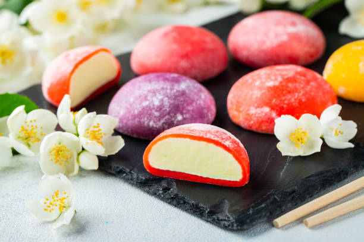

MOCHI RECEIPE

DESCROPTION
Mochi is a Japanese dessert. The gooey,
scrumptious 'dough' surrounds the
filling, and is rolled into a little ball.
You can color the dough with food coloring,
if desired.
Eat mochi as is or fill with whatever you
want (e.g. peanut butter, red bean paste,
etc.) Enjoy!
INGREDIENTS
- glutinous rice flour(mochiko)
- water
- white sugar
STEPS
- Mix rice flour and water together in a bowl;
add sugar.Mix dough until no flour spots are
present.
- Place a dough boiler over simmering water;
steam until dough is very got and very sticky,
about 15 minutes.
- Working quickly, remove dough from double boiler
with a spoon or spatula and set on work surface
floured with rice flour. Knead dough with your
rice floured hands, adding more flour as needed
so mochi dough doesn't stick to your hands anymore.
- Divide mochi into 6 to 8 pieces, about the size
of a ping pong ball.
NUTRITIONAL FACTS
Per Serving:
161 calories; protein 1.6g; carbohydrates 37.8g; fat 0.4g; sodium 1.2mg. Full Nutrition